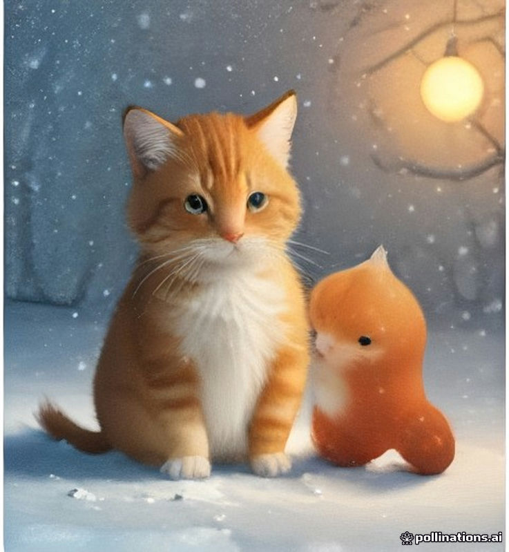
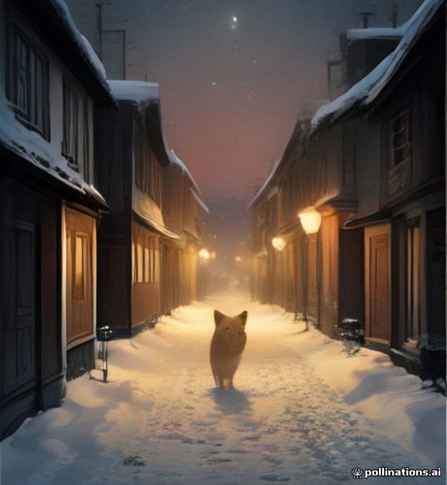
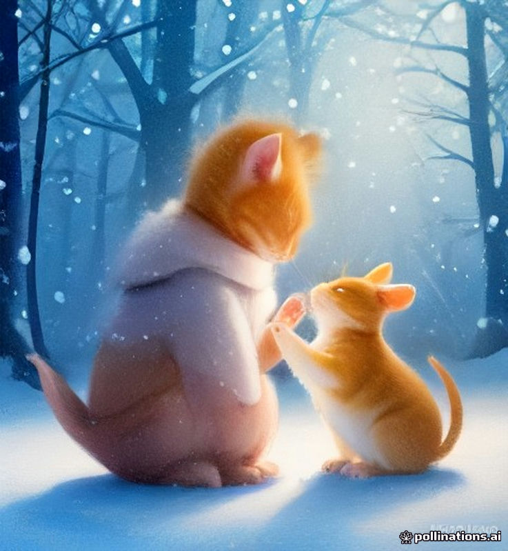
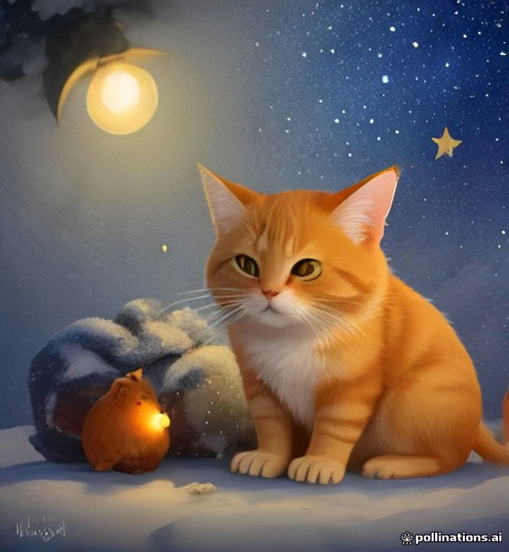

Pip and I discover a tiny spark of winter magic beneath the snowy oaks.

The snow fell in slow, quiet whispers across Loki's Town, painting the cobblestones in pure white. Pip twitched his whiskers from his warm perch right between my ears. 'Let us look for winter secrets,' I murmured, stepping softly into the chilly dusk.
Beneath the great oak tree by the plaza, something caught our eye. It was not a pebble or a leaf, but a tiny acorn pulsing with a warm, golden light like a fallen star. It melted the snowflakes in a gentle ring around it.

I leaned down carefully, my whiskers brushing the frosty ground, while Pip tilted his little head in wonder. The light felt like summer sunshine tucked inside a shell, humming a soft, cozy tune that made our paws feel warm.

We did not take the acorn away; instead, we sat together in the glowing light until the stars came out, sharing the quiet magic of the winter night and knowing our town was full of wonderful surprises.